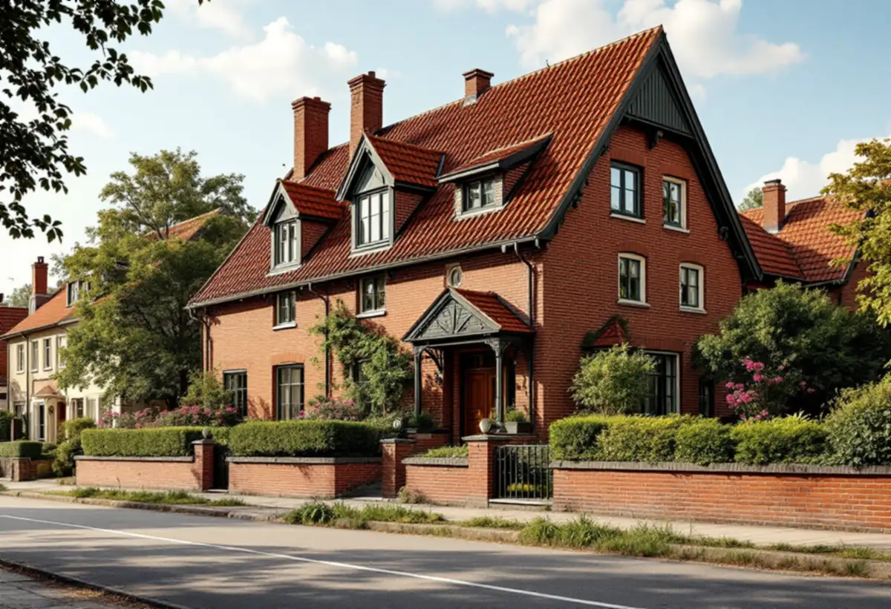
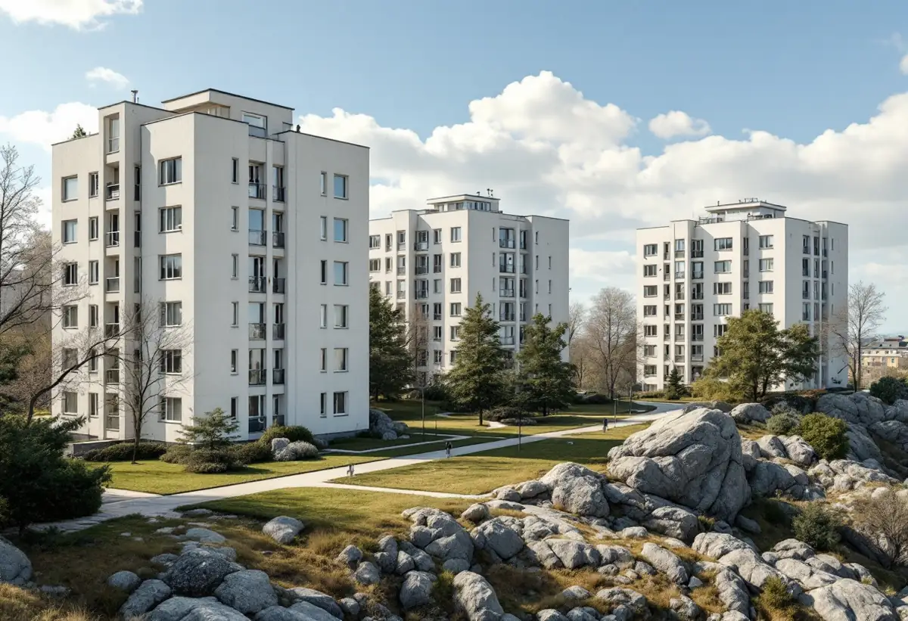

Besök
Gratis besök på taket och vinden med styrelsen eller ägaren.
Östermalm är till största delen stenstad med föreningar som äger taken. Men här finns också Lärkstaden och Diplomatstaden med tegelhus från 1910- och 1920-talen och Gärdesstaden från funktionalismens genombrott. En takrenovering på Östermalm ser därför olika ut beroende på i vilken av de miljöerna huset ligger – och vem som äger det.
Stadens statistik för 2024 visar 7 344 bostäder i Hedvig Eleonora, en av Östermalms statistikområden. 5 164 av dem är bostadsrätter och bara 11 ligger i småhus. Så ser det ut i stora delar av Östermalm: taket ägs av en förening.
Stenstaden på Östermalm uppfördes till största delen under 1800-talets senare del. Tillsammans med Norrmalm bildar den stadens största samlade årsring och grunden för stadens siluett.

Lärkstaden byggdes 1909–1918 och är ett tidigt exempel på en stadsplan anpassad till terrängen. Staden beskriver den småskaliga arkitekturen, mängden tegelhus och de planterade förgårdarna som en känsla av idyllisk, engelsk villastad.
Större delen av Lärkstaden omfattas av en detaljplan från 1952 som reglerar byggrätten. Staden har skrivit att den vid behov kan komplettera med skyddsbestämmelser. Vid en takrenovering här är det därför klokt att behålla material, takform och detaljer precis som de är.
Diplomatstaden byggdes på 1910- och 1920-talen med stora enfamiljshus runt Engelska kyrkan, avsedda för utländska beskickningars residens. Husen är av tegel med ett enhetligt formspråk och stor omsorg om utformningen. I stadens beskrivning av villaområdena nämns villor i nationalromantisk stil och stor omsorg i materialbehandlingen som värdebärande.
Området skyddas genom miljöbalkens bestämmelser om nationalstadspark. Ett tak här renoveras med samma material och detaljer, och alla ändringar stäms av med staden innan arbetet börjar.
Gärdesstaden byggdes 1932–37 på ömse sidor om Tessinparken och är en av Sveriges mest kända miljöer från funktionalismens genombrottstid. Även den skyddas som en del av nationalstadsparken.
I stenstaden beskriver staden taken som sluttande, oftast plåttäckta och med en lutning på upp till 45 grader. Där handlar renoveringen oftast om ommålning, tätning av falsar och nya beslag runt skorstenar och huvar. Läs mer om plåttak.
För flerbostadshus krävs bygglov när kulör eller material på taket ändras på en sida som vetter mot allmän plats. Är huset eller området särskilt kulturhistoriskt värdefullt gäller utökad lovplikt även för sådant som annars är lovfritt.
Stadsmuseets klassificeringskarta ger en första indikation. Behövs bygglov tar vi fram takplan och material- och kulörbeskrivning till föreningens ansökan.
På en villa i tegel från 1910-talet kan taket vara lika genomarbetat som fasaden. Vid en omläggning tar vi ner, sorterar och sparar så många pannor som möjligt, och kompletterar med pannor som liknar de gamla i form och färg. Nockar, skorstenar och kupor får nya beslag i samma utförande.
Det som oftast behöver bytas är underlagspapp och läkt. Råspont som har tagit skada byts ut bit för bit. Målet är att taket ska se ut som förut från gatan, men vara tätt för lång tid framåt.
I stenstaden är det bostadsrättsföreningen eller fastighetsägaren som beställer. Villorna i Diplomatstaden byggdes för utländska beskickningar, och många har andra ägare än privatpersoner. Oavsett vem som beställer får ni ett skriftligt kostnadsförslag med foton efter ett gratis besök.
För villor och för föreningar gäller samma sak: vi beskriver vad som måste göras nu och vad som kan vänta, med foton från taket och vinden. Då blir det enklare att planera och att jämföra med andra förslag. Har huset gamla ritningar eller tidigare kostnadsförslag tar vi gärna del av dem, så att vi vet vad som redan har gjorts på taket.

Gratis besök på taket och vinden med styrelsen eller ägaren.
Vi tittar på områdets skydd och Stadsmuseets karta.
Skriftligt kostnadsförslag med foton och prioriteringar.
Takplan och kulörbeskrivning om något ändras mot gatan.
Plåt, tegel eller tätskikt med samma material som förut.
Foton och beskrivning till underhållsplanen.
Bor du i bostadsrätt ger arbete på husets tak inget rotavdrag enligt Skatteverket. Avdraget i en bostadsrätt gäller arbete inne i lägenheten som du själv ansvarar för enligt stadgarna, och taket är föreningens sak. Det är föreningen som beställer och betalar.
Villorna i Lärkstaden och Diplomatstaden är få. Äger du ett småhus på Östermalm räknar Skatteverket däremot reparation och byte av takpannor och hängrännor som rotarbete. Avdraget är 30 procent av arbetskostnaden, högst 50 000 kronor per person och år, och Geal drar det direkt på fakturan. Läs mer under rotavdrag för takarbete.
Kostnaden för en takrenovering på Östermalm påverkas av takets yta och lutning, om det är plåt, tegel eller papp, antalet skorstenar, kupor och takfönster, ställning mot gatan och om bygglov behövs. Läs mer om vad en takrenovering kostar.
Takbyte, besiktning och plåtarbeten.
Takläggare på Östermalm →Så fungerar en omläggning.
Takrenovering och takomläggning →Det här styr priset.
Vad kostar en takrenovering? →Räkna på takytan och ROT.
Takbyte-kalkylator →Stenstad, Röda Bergen och föreningarnas tak.
Takrenovering i Vasastan →Brevik, Mölna och Käppala.
Takrenovering på Lidingö →Djursholm, Stocksund och Enebyberg.
Takrenovering i Danderyd →